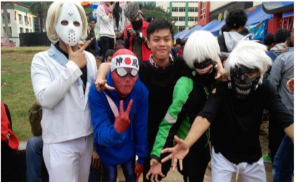
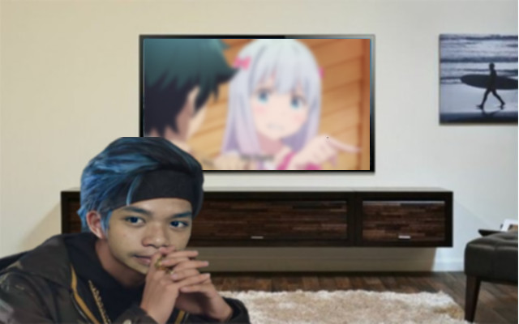

Hello Guys!
It's All About Me
Biodata
Nih nih Biodataku kalau mau tau mah...
-

- Ngaran : Muhammad Anugrah Yudha Prasetya
- TTL : Bandung , 20 Juli 2002
- Rumah : Ciampea
- Agama : Islam
- Hobi : Apa weh
Hobby
Actually, I like watching some Animes ....Di kehidupanku, Aku lebih sering berada di rumahku lebih tepatnya berada didalam kamarku. Disana Aku bisa melakukan banyak hal, misalkan belajar, bermain, membaca novel/komik atau nonton. Nah, untuk nonton Aku paling sering nonton anime (emang jarang yang laen si). Berarti ya hobiku itu nonton anime mungkin. Masih banyak si sebenernya mah kayak tidur, lari, mabar ama temen, dan baca komik. Tapi ya kalau paling sering dilakukan ya ini.

Karya
The Best Mahakarya that I create in... 2019. Actually I create this for my computer task in SMAKBO. Tugas ini kubuat dengan sepenuh hati.

Idola
Robert Downey, Jr. ( Tony Stark as Iron Man ).... Aku mengidolan nye karna Aku suka sekali dengan perannya saar bermain film di seri AVENGERS yaitu Iron-Man. Berbeda dengan Hero yang lain, IronMan sangatlah cerdas akan teknologi yang Ia miliki dan juga tentunya sangat kuat. Bahkan Ia hampir seimbang saat melawan Thanos, Alien terkuat. Sebagai anak SMAKBO Aku juga ingin seperti Tony Stark yang pintar itu. Tapi sekarang Aku sudah akrab banget ama Tony Stark, liat weh eta poto kumaha.